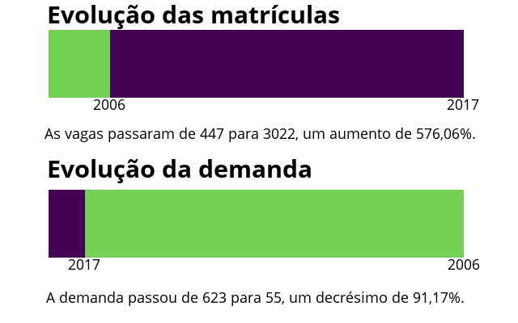
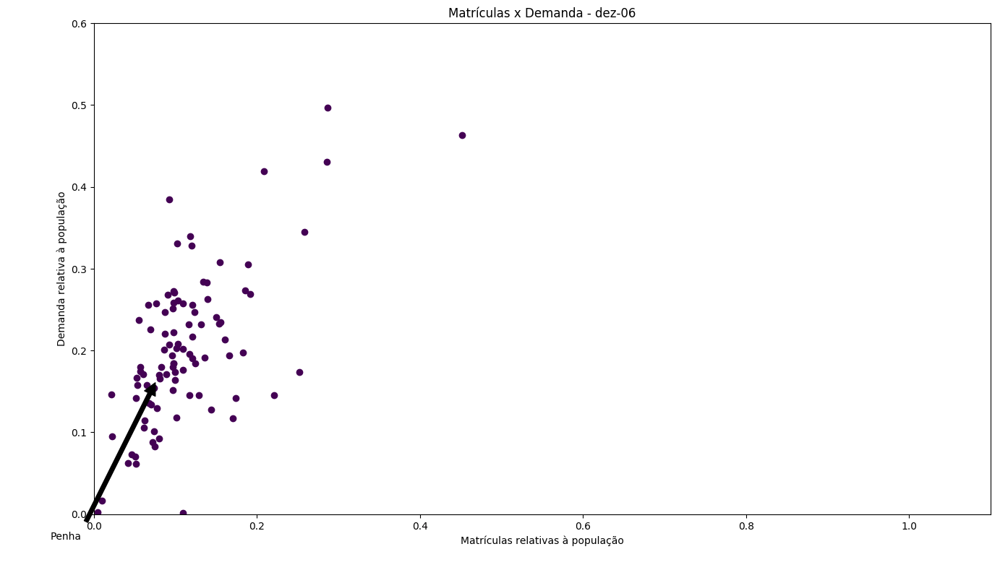
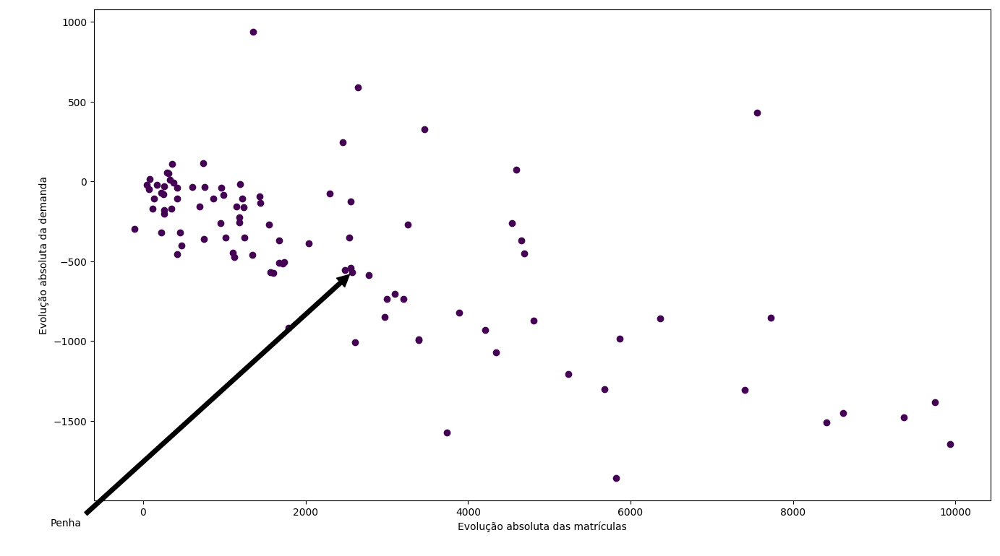
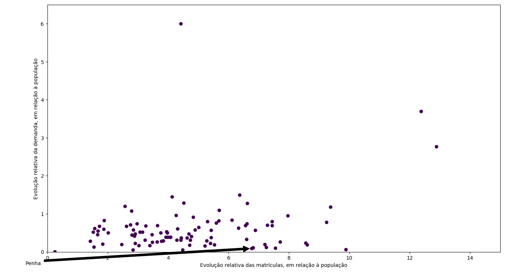
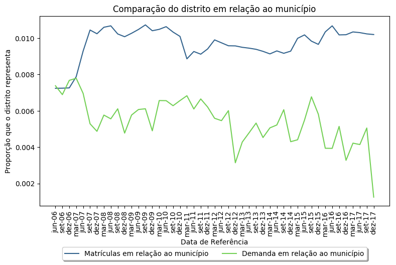
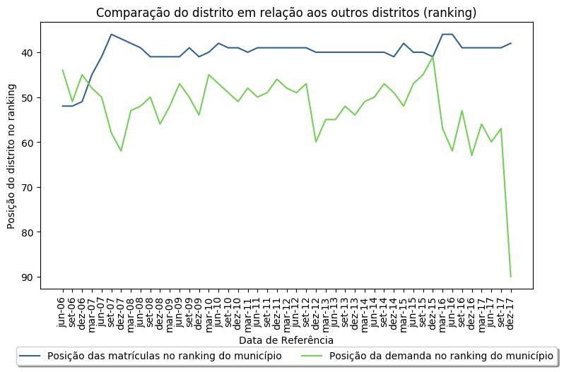

Estimativa populacional em 2017 (0 a 3 anos):
6084
Atendimento total em dezembro de 2017:
3022
Atendimento relativo à população estimada em dezembro de 2017:
49,67%
Demanda total em dezembro de 2017:
55
Demanda relativa à população estimada em dezembro de 2017:
0,9%

Evolução da matrícula em relação à demanda (comparado com a população)

Evolução absoluta do atendimento no distrito, comparada com os outros

Evolução relativa do atendimento no distrito, comparada com os outros

Comparação da proporção do distrito em relação ao município

Evolução do distrito no ranking do município
